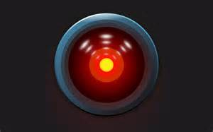
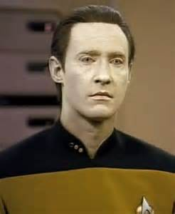

Digital Editing Workshop
CSUN Digital Editing Group
12 February, 2015
What is "digital editing"?
A working definition: Textual scholarship in digital form.
Textual Scholarship
Serves Multiple Disciplines
Historical Goals:
To search for the origins of texts
Based on surviving copies, how, under what circumstances, and in what form was the text originally produced?
To view texts as products of their socio-historic context
What sort of literary, historical, or archival ecology does the text belong to and what is its role in that ecology?
To understand texts
on their own merits
What formal features are the texts composed of and how do those features operate?
To provide greater access to texts and ensure their sustainability for use in any of the above goals
How can we ensure that texts are available to people whilst preserving the original copies?
Decline and Revival
Reasons for Decline:
- Print culture made texts more static and print became the model of textuality.
- Preservation and access became the preserve of the library sciences.
Reasons for Revival:
- Printed editions were deconstructed, revealing the extent of editorial biases.
- Book history and other material approaches revealed that even printed texts were fluid objects.
- Digital tools generated potential new ways of using and understanding texts.
The Potential of the Digital
- Digitisation of texts provides access to previously unedited materials.
- Digitisation highlights the materiality of the text including features lost in print editions.
- Digitisation provides opportunities for greater or different types of interaction with the text.
Accessing this potential requires remediation
“Remediation is the process whereby computer graphics, virtual reality, and the WWW define themselves by borrowing from and refashioning media such as painting, photography, television, and film. It is the anxiety of influence acted out in the poetics of technology.” (Bolter and Grusin, Remediation)
Questions about Remediation
- How do we move from the physical to the digital?
- What exactly is gained and lost in the process?
- How much should the digital text look like the printed text (or like a manuscript original)?
- What types of functionality (search and analytical tools) can be available in a digital edition?
- How do the above questions change our experience of reading?
- How do these questions affect our editing goals?
Zooming in on the Experience of Reading
Hypertext Reading
Hypertext theory so 90's, but the tools are still relevant. Increasingly, digital reading is an archival experience in which digital content is accessed as linked data.
Digital archives (typically produced by libraries) are increasingly blended with digital editions by modern content managment systems designed with hypertext reading in mind. An example of such a tool is Scalar.
Meta-Reading
The most well-known is Franco Moretti's "distant reading" in which features of multiple texts are counted and patterns are observed based on the texts' metadata.
A recent example is Ben Schmidt's distant reading of Rate My Professor vocabulary by gender.*
Another example is Ben Schmidt's plot arcs.
Deformance
Deformance (combining deformation and performance) is an algorithmic modification of the text to improve our understanding by changing our perspective.
Topic modelling, which organises words into themes based on the likelihood that they appear together, is one form of deformance. For instance, Matthew Jockers produced 500 themes from 19th century novels visualised as word clouds.
Zooming in on the Goals
Types of Editions:
- Facsimile: Images of the physical object. In some editions, digital images can be manipulated.
- Record Type: Transcriptions which attempt to preserve the physical layout and script/typography of the text.
- Diplomatic: Transcriptions with minimal interpretation (usually just things like expansions of abbreviations or other features, depnding on the editor’s view of their interpretive significance).
- Interpretive: Transcriptions with significant editorial interventions
Traditional Types
of Interpretive Editions
Normalised
Transcription of the text which is modified to correspond to some internal norm (e.g. consistent spelling, dialect, etc.).
Resultative
Presents a single version of the text without attesting to any historical growth or variation. Student editions are often of this type.
Apparatus-Style
Present a "critical apparatus" with variant forms of readings.
Best Text
Presents the text based on a single witness chosen because it is "better" than others according to some criterion.
Synoptic
Presents multiple witnesses that can be seen side by side.
Eclectic
Eclectic: Combines readings from multiple witnesses into a new text (which may represent a presumed lost original).
Questions for Digital Editors
- What features of traditional editions do we want to reproduce?
- What shortcomings do we want to avoid?
- What scholarly questions can be addressed by extending the traditional edition with digital tools?
Digital editing is about collaborating with computers.
But what do we get when we collaborate with computers?



 |  |
 |  |
 |
|
Digital Editing Models
Content Managements Systems
- Used to store, serve, and search various types of media.
- Generally used for digital archives.
- Editorial work is mainly providing metadata (authorship, date, etc.) about the content.
Crowdsourced Remediation
- Typically digital archives serving images with a function to enable members of the public to create transcriptions.
- Some systems allow transcribers to supply interpretive markup.
Web Sites
- Use markup languages (HTML and CSS) to present content in a browser.
- Almost all digital editions now use the browser as for presentation.
- Producing directly in HTML and CSS is low hanging fruit.
Descriptive Markup
- Use markup languages (typically XML) to describe content.
- Can be used to describe sophisticated interpretive information, as well as metadata.
- Separation of content from presentation ensures platform independence.
- Labour-intensive.
An example of basic HTML
Hamlet
Je ne sais quoi
Renders as:
Hamlet
Je ne sais quoi
An example of basic XML
Hamlet
Je ne sais quoi
Says: The source text has a title called "Hamlet" and a paragraph in French which is in italics.
Does not say: How the text should look in the browser. For that the XML has to be transformed into HTML.
A more complex example
Standards, Standards, Standards
The Text Encoding Initiative (TEI) is a set of guidelines for describing texts in XML. There are similar standards for metatadata (which can be written in TEI.
TEI helps you describe texts in a way that can be processed by computers.
TEI is extendable for the needs of individual projects. For instance, it has been developed into a Comic Book Markup Language (CBML).

Cap acts quickly to tranquilize the gun-happy pedestrian...
A little sleep will do wonders for you!
SPLAT!
Ugh!
THE END
Made with Reveal.js